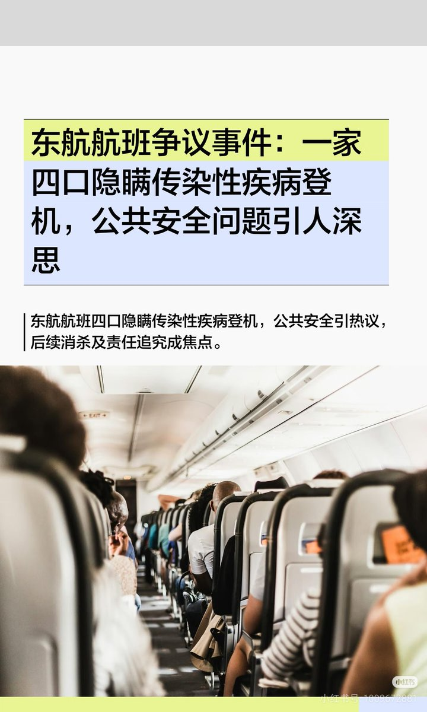
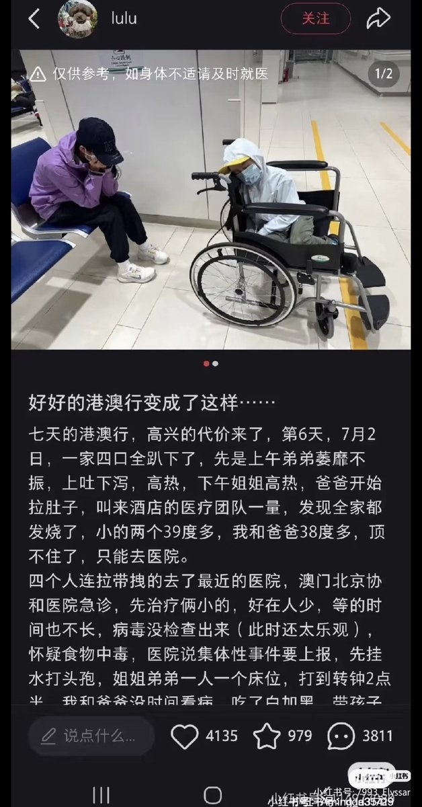
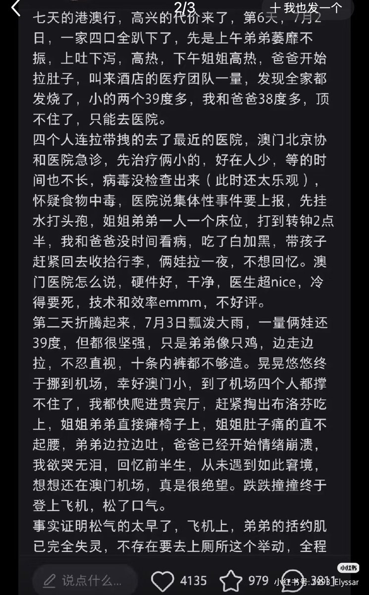
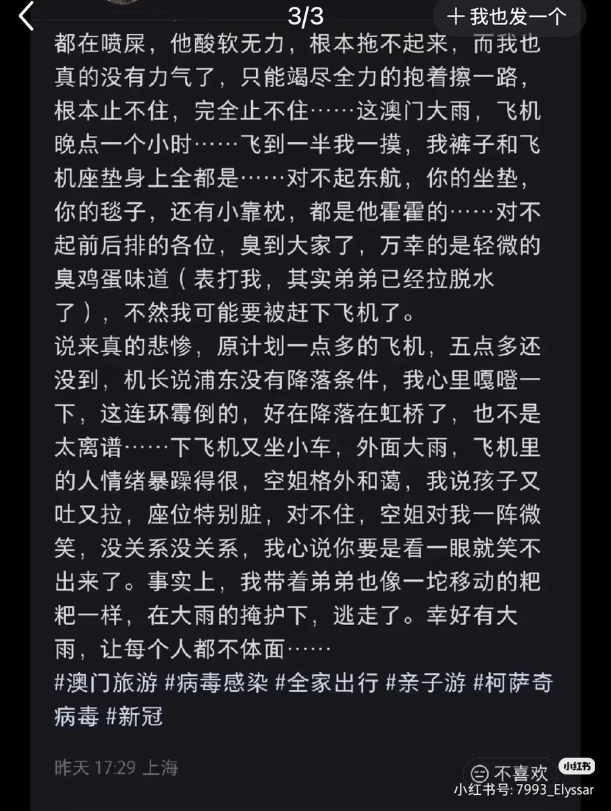

文芸~空白子
@bungeikuhakushi
@JawenZhu 為甚麼管疫登記了醫院還可以放他們走 還可以過海關坐飛機的（？ 這管理是不是有點鬆啊




🌹Jawen🌹（淡推中）
@JawenZhu
太逆天了，一家人在澳门感染病毒，然后不想在澳门医院看病上报，看一半就跑了，瞒着自己的身体状况上了飞机，结果在飞机里上吐下泻，污染了飞机座位，这个帖子的当事人居然还能如此大言不惭发出来，毫无危害公众的歉意和愧疚😅（图二三四是小红书当事人发的原帖） https://t.co/TekSikrmgy